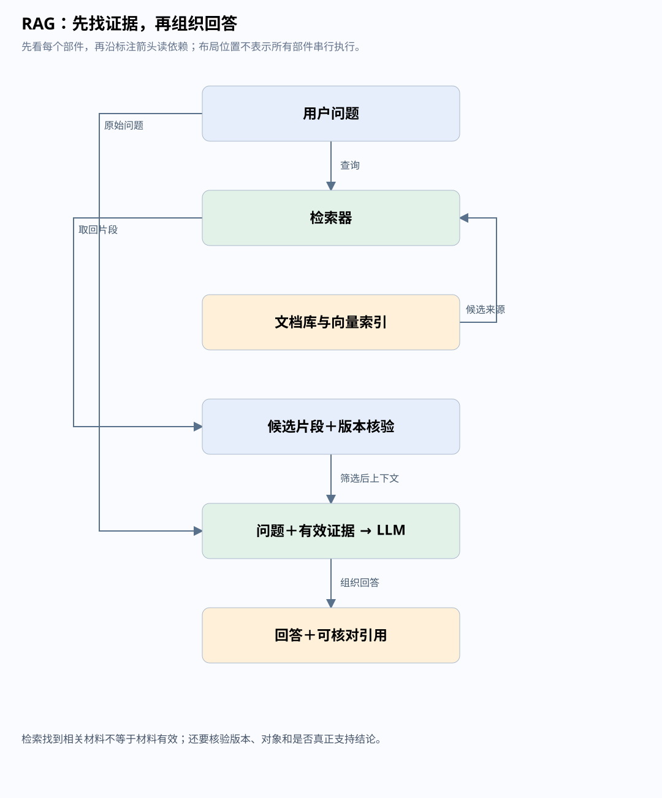

第14课 / 14课
RAG、工具与证据
不会或过期的知识，能先查再答吗？把问题送去检索，拿回片段，核验版本与适用范围，再把有效证据交给模型组织回答。相似度最高不等于来源有效。
读图前，先认本课的新词
| 术语 | 输入 → 输出 | 解决什么问题 |
|---|
| RAG | 问题→检索证据→带证据生成 | 先查资料再作答，不等于现场训练权重 |
| 向量索引 | 文档表示→可检索的存储结构 | 帮助找表示上相关的片段 |
| 工具调用 | 工具名与参数→外部结果 | 计算、查业务数据等；还要检查权限和结果 |
| 引用 | 回答结论→支持它的来源位置 | 链接存在不等于内容真的支持结论 |
先按这张表，把过程走一遍
查到、核验、引用，三步不能省
| 步骤 | 报销制度例 | 这一站要查什么 |
|---|
| 用户提问 | 现在餐费能报多少？ | 时间、对象和制度范围 |
| 检索 | A旧制度相似度0.95；B新制度0.85 | 相似度只负责找相关候选 |
| 核验 | B明确生效并替代A | 生效日期、适用对象、替代关系 |
| 组织回答 | 按适用的B解释标准 | 不要凭旧记忆补缺失金额 |
| 给出处 | 链接到B的具体条款 | 引用内容确实支持答案 |
先预测，再操作把旧文件A的相似度调到最高，看排名和有效依据为什么不同。这里事先假设B确实适用且明确替代A，不是所有问题都无条件选最新文件。
对照结构图，继续看原理与实验

先找输入，再沿箭头读输出。点击大图查看。16.2 补齐 RAG 与工具使用
先把最新制度放到桌面上，再让模型回答。下面沿着切分、检索、引用和核对走一遍；当相似度和生效日期冲突时，你会看见为什么检索结果还不能直接当结论。
RAG先检索外部材料，再把证据交给生成模型。它通常不直接更新模型参数，也不能自动消除错误；需要检查检索覆盖、证据引用和回答忠实性。工具调用进一步让模型选择外部操作。
把刚才的直觉一步步算出来
RAG把查询交给检索器，从外部语料找出相关文档，再让生成模型结合材料回答。向量检索、关键词检索和重排序可以组合；检索器返回得分不是文档事实可信度，需要另外看来源、版本与相关性。
最小流程是：问题改写或编码 → 召回候选片段 → 重排与筛选 → 组装含来源的上下文 → 生成回答 → 检查引用是否真正支持结论。文档切片太碎可能丢条件，太长又占上下文；应围绕实际问答测量。
外部知识进入上下文通常不会立刻改变模型权重。删掉检索库记录、清空当前上下文和机器遗忘属于不同操作。RAG也不能自动消除幻觉：检索错了、没检索到、材料过期、模型曲解证据都可能失败。
工具调用让模型在需要时请求外部运算或动作。与RAG相比，工具输出不一定是文本知识，也可能是计算结果或系统状态。是否调用、参数是否正确、结果能否解释都需要检验；把它们放在语言生成周围，不要误当成模型每次回答都在训练。
换你试一次：先猜，再算
检索到A文件说2024年上限100，B文件说2026年上限200，用户问当前上限。应该直接取最高检索分的A吗？回答需要哪些条件？
参考答案与计算结果
不能仅按检索分决定。先核对适用对象、生效时间与是否被新规则替代；若B适用且有效，应以B为依据并给出来源与日期；证据不足时说明缺口。
这个类比帮到哪里，停在哪里
不是对作者视频正文的归纳，也不表示作者从未讲过该内容。
先预测，再动手
先记下当前输出；只改一个条件，观察数值与图形怎样变化，再用本课过程解释原因。
用一道题检查是否懂了
最相似的旧制度被新制度明确替代，引用哪份？
答案与理由
采用确实适用的新制度，同时核对生效时间、对象与替代关系。
把过程讲回来
请回答：不会或过期的知识，能先查再答吗？说出中间至少两个步骤，并指出一个本课方法不能保证的事情。
回答核对
把问题送去检索，拿回片段，核验版本与适用范围，再把有效证据交给模型组织回答。相似度最高不等于来源有效。
查看对应来源专题、完整算例与代码 →